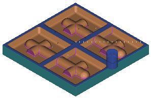

Estimated time to complete: 20–30 minutes
The completed program must cut the finished part from a solid block of material using a sequence of roughing, semi-finishing, and finishing operations while applying acceptable standard machining techniques.

Launch the Planar and Cavity Milling project activity.